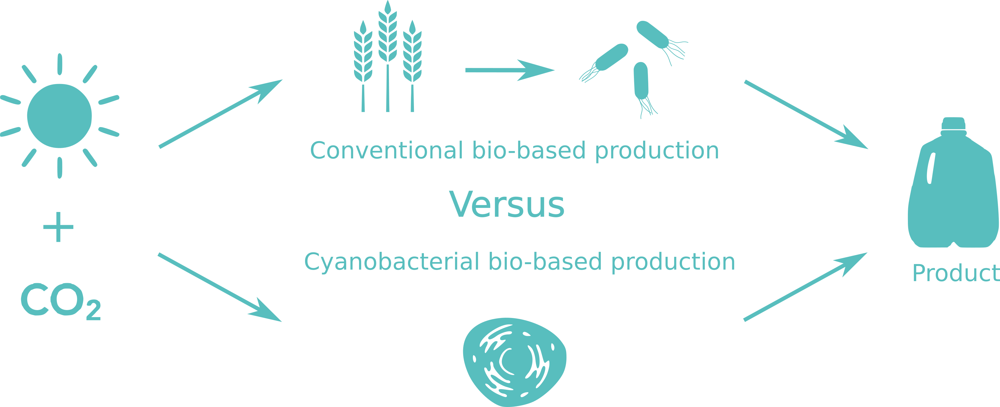

Traditional land-based crops are often seen as humanity’s greatest hope for self-sustained energy and commodity production. However, there is another organism which might have something to say about that. Cyanobacteria have been photosynthesizing and compounds for billions of years, and in this time, they have become quite good at it.
CO2
With the advent of human-induced climate change, the idea of a low-carbon, bio-based economy has come to the forefront. This type of economy has many benefits, primarily: reduced CO2 emissions, sustainable primary production, a robust food chain, and new business opportunities with high-skilled jobs [1]. Towards this end, agriculture has been the dominant sector so far, with biofuels and other commodities being primarily derived from carbon sources (e.g. glucose) produced from crops such as sugarcane or maize. However, this process requires multiple harvesting, extracting, and purifying steps with each step begetting its own inefficiencies [2,3].
A more straightforward approach involves using photoautotrophic microorganisms, such as our cyanobacterium Synechocystis, to directly convert CO2 to product [4]. Some advantages of using cyanobacteria over land-based crops, in addition to eschewing the need for inefficient intermediary steps, includes greater photosynthetic efficiency and a lack of competition for arable land with other food and feed crops [5]. Furthermore, Borak et al. [2] calculated the annual carbon flux from atmospheric CO2 to product for commonly used biofuel crops, with sugarcane having the highest carbon flux of 4 MgC ha-1 yr-1 (tonnes of carbon per hectare per year)
In order to compare this carbon flux with the production rates of our engineered Synechocystis strains, we first calculate what the minimum required production rate would need to be in order for us to reach the same carbon flux:
\[\frac{4\,Mg_C}{ha\cdot y}\,\frac{10^6\,g_C}{1\,Mg_C}\,\frac{1000\,mmol_C}{12\,g_C}\,\frac{1\,y}{8760\,hr}\,\frac{1\,ha}{10000\,m^2}\,\frac{600\,m^2}{35\,m^3}\,\frac{1\,m^3}{1000\,L}\,\frac{1\,L}{0.5\,gDW}=\frac{0.130\,mmol_C}{gDW\cdot hr}\]
For this calculation, we used a ground surface area-to-volume ratio of 600 m2:35 m3, which is the same ratio as the large “algae farm” in Klotze, Germany [6]. Additionally, we also assume a biomass concentration of 1 gDW.L-1, which is easily attainable (and even surpassed) by our strains.
We have compared this minimum production rate to that of our producing strains under different cultivation conditions (Table 6.1). We can see that the minimum required to match the production rates of chemoheterotrophs (e.g. E. coli) based on glucose extracted from sugarcane (so, looking at the whole process from CO2 to product) has been surpassed by over 3.6 fold in the ΔfumCΔzwf cultured under continuous light. One might argue that continuous light is not a fair comparison (and we agree). But even looking at the same strain in industrial-like conditions with circadian cycles leads to the conclusion that the production rate from CO2 to product of previous systems not relying on cyanobacteria is outcompeted by over 2 Fold!
It should be noted that this calculation is rudimentary at best, and should not be taken as an absolute threshold. Production rates for both crops and cyanobacteria will vary due to numerous additional variables (e.g. light availability, culturing apparatus, temperature, CO2 concentration, etc.) that are wholly ignored in this calculation. However, in an attempt to compensate for this lack of detail, we chose conservative values for our assumptions, namely the ground surface area-to-volume ratio and biomass concentration. Other facilities, such as the one owned by Mera Pharmaceuticals (formerly Aquasearch, Inc) in Hawaii have a ground surface area-to-volume ratio of 100 m2:25 m3, which is more than four times smaller than the ratio used in the calculation [2]. Furthermore, Synechocystis is capable of growing to much higher concentrations than 1 gDW.L-1 [7]. Therefore, rather than comparing exact production rates requiring great detail, we aimed to highlight the productivity disparity between land based crops and cyanobacteria even when the culturing capabilities of cyanobacteria are underestimated.
It is important to note as well that while the cultivation of crops has been refined for at least 23,000 years [9], the usage of cyanobacteria to produce commodity chemicals is around for less than 20 years [10]. If one looks at the progress in this field during the last decade; considers the remarkable cyanobacterial bloom in the scientific literature; and compares the current production rates reported [11] - it is easy to imagine the prominent role that cyanobacteria will play in the biobased economy and in ensuring the sustainability of our production processes.
References
- Sandra Nebe. Bio-based economy in Europe: state of play and future potential-Part 2 Summary of position papers received in response to the European Commission’s public on-line consultation. Tech. rep. European Commision, 2011.
- Brian Borak, Donald R. Ort, and Jonathan J. Burbaum. “Energy and carbon accounting to compare bioenergy crops”. In: Current Opinion in Biotechnology 24.3 (2013), pp. 369–375.
- Jens Nielsen, Christer Larsson, Antonius van Maris, and Jack Pronk. “Metabolic engineering of yeast for production of fuels and chemicals”. In: Current Opinion in Biotechnology 24.3 (2013), pp. 398–404.
- Daniel C. Ducat, Jeffrey C. Way, and Pamela A. Silver. “Engineering cyanobacteria to generate high-value products”. In: Trends in Biotechnology 29.2 (2011), pp. 95–103.
- Nico J. Classens, Diana Z. Sousa, Vitor A.P. Martins dos Santos, Willem M. de Vos, and John van der Oost. “Harnessing the power of microbial metabolism”. In: Current Opinion in Microbiology 31 (2016), pp. 63–69.
- Janssen, M., Tramper, J., Mur, L. R., & Wijffels, R. H. (2003). Enclosed outdoor photobioreactors: Light regime, photosynthetic efficiency, scale-up, and future prospects. Biotechnology and Bioengineering, 81(2), 193–210.
- Snir A, Nadel D, Groman-Yaroslavski I, Melamed Y, Sternberg M, Bar-Yosef O, et al. The origin of cultivation and proto-weeds, long before neolithic farming. PLoS One. 2015;10:e0131422.
- Deng M De, Coleman JR. Ethanol synthesis by genetic engineering in cyanobacteria. Appl Environ Microbiol. 1999;65:523–8.
- Lips, D., Schuurmans, J. M. M., Branco dos Santos, F., & Hellingwerf, K. J. (2017). Many ways towards “solar fuel”: Quantitative analysis of the most promising strategies and the main challenges during scale-up. Energy Environ. Sci.